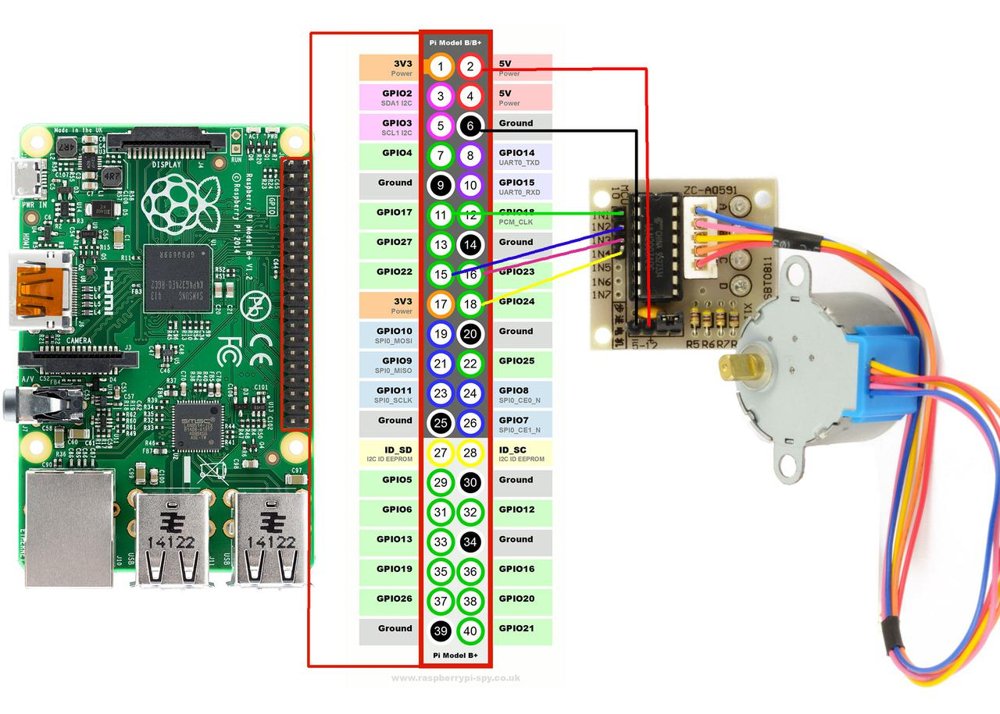

Moving microscopes with stepper motors
The motorised stage of our auto-scope project is working!
Now that we have a platform to work on I thought I'd write a post about the motors we are using and how we can control them with Python.
On the subject of stepper motors
There are a lot of turtorals and guides about stepper motors aviable online. The most realevant refrence I have found is the video below "Stepper Motor Control with the Raspberry Pi" by Gaven MacDonald. It is a comprehensive overview of how stepper motors work, and how to control one using the Raspberry Pi.
We are using 28BYJ-48 stepper motors with ULN2003 drivers; they are small, cheap, and precise. You can find some technical details here.
A stepper motor is a brushless DC motor that rotates in steps. In contrast to a conventional brushed motor, that just spin, a stepper motor can be precisely positioned at any given step. This high level of control allows us to postion our microscope stage at any X,Y coordinate with minimal error.

We will send a specific sequence of signals to the 4 control wires of the stepper motor that will in turn activate a magnetic field and rotate the core. The GIF above shows a simplfied example of how our stepper motors work (if you'd like to see this in detial I suggest you watch Gaven's video above).
Making things move with Python
To control motors with our code we require an interface between softwear and hardwear. For our project we are using a Raspberry Pi. A Raspberry Pi (RPi) is a tiny, cheap, computer. These computers come equpied with programmable General Purpose Input Output (GPIO) pins. These pins allow us to interact with the outside world, via electial signals. Python provides an easy interface for controling the pins though it's RPi.GPIO library.
Let's start by wiring up our RPi as per the diagram above.
The specific GPIO pins we use doen't real matter, we just have to know which pins we have used as we will refer to them in the code.
I've used pins 17, 22, 23, 24 and they are connected inputs 1, 2, 3, 4 on the motor driver respectivly. For power I've connect a 5V power pin to the postive (+) terminal on the motor driver and the same for ground and negative (-).
The (stolen) code below will turn the motor 360˚.
Lets go though what is happening line by line.
import RPi.GPIO as GPIO import time |
On the first 2 lines we import some required packages. There are over 150,000 Python packages on The Python Package Index (PyPI). So this import statment help us define which packages we'll be using.
GPIO.setmode(GPIO.BCM) |
On line 4 we set the mode of the of the GPIO pins to BCM, this allows us to select GPIO pins based on name instead of postion.
control_pins = [17, 22, 23, 24] |
On line 6 we define a list of GIPO pins that we'll use to control the motor. It's important to remember that in Python the list index starts at 0. If you wanted to access the second element of this list you would use control_pins[1]. See this blog if you're wondering why (Don).
for pin in control_pins: GPIO.setup(pin, GPIO.OUT) GPIO.output(pin, 0) |
We use a for loop on line 8 to iterate through each element (pin) in the control_pins list. This alows us to setup and set the intial output of each pin on lines 9 and 10.
halfstep_seq = [ [1,0,0,0], ... [1,0,0,1] ]
We define the complete sequence of signals required for one cycle with half stepping on line 12. The 1's and 0's tell us which pins should be off(0) or on(1). This halfstep_seq variable is a list of list. To access the first element of the first nested list, we can use the notation halfstep_seq[0][0], which returns 1. We'll use this nested list indexing to turn our motor.
for i in range(512): ... |
The main logic of our script can be found in the nested for loops on lines X to Y. The range(n) function returns a list of integers from 0 to n. So range(3) returns [0,1,2]. In our first for loop, we use range to create a list of 512 integers (the of steps number required for one required for one revolution).
for halfstep in halfstep_seq: ... |
We then cycle through each halfstep in the halfstep_seq, each halfstep being a list of length 4 with the state of each pin for that step.
for i, val in enumerate(halfstep): GPIO.output(control_pins[i], val) time.sleep(0.001) |
In our final for loop, we set each of the control pins to the appropriate state. We use the enumerate function to return the index and value of each element in the halfstep list. We use the index (i) to access the correct pin, and set its corresponding value (val).
GPIO.cleanup() |
On the final line, we clean up the GIPO pins.
And that's it, running these X lines of code will turn the attached stepper motor 360˚. You can try playing with the 512 value to change the amount the motor will turn. If you're feeling confident, you could even try to generalise this code into a function (or wait for our next post).